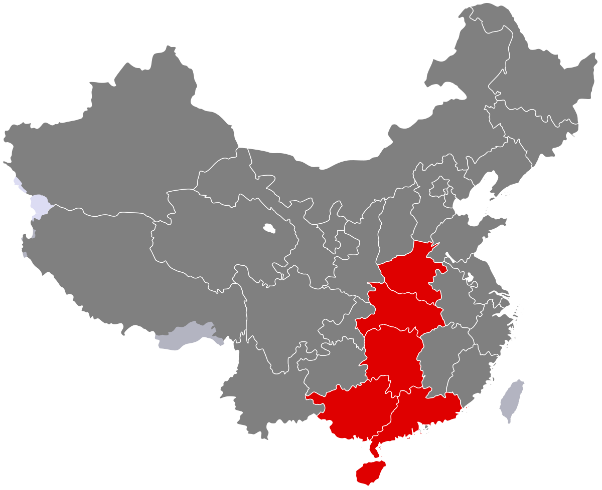

Sourthern China & Hong Kong

Yue/Cantonese Cuisine
This style
of cuisine represents the south of
China. This style is also referred to
as Cantonese or Guangdong cuisine.
This style of cuisine is one of the
most famous and was at a certain time
the most popular style throughout the
Western world. This cuisine
incorporates almost all edible meats
and even exotic animals such as snails.
This style is also known to be
balanced and not greasy.
Click here for more info